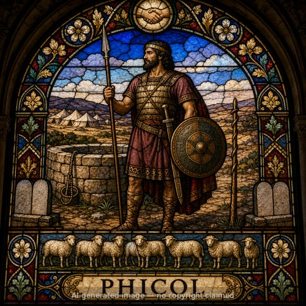

Phicol — stained-glass style portrait
Phicol (M)
First named in Genesis 21:22-32
Phicol served as commander of the army under Abimelech, the Philistine king of Gerar, and appears at two separate treaty-making moments a generation apart. After Abraham's servants and Abimelech's servants disputed over a well at Beersheba, Abimelech came to Abraham together with Phicol and said, 'God is with you in everything that you do; now therefore, swear to me here by God that you will not deal falsely with me' (Genesis 21:22-23). Abraham agreed, set apart seven ewe lambs as a witness to his claim on the well, and the two men made a covenant at Beersheba before Abimelech and Phicol returned home (21:27-32). Decades later, after similar friction over wells between Isaac's herdsmen and the Philistines, Abimelech again came to Isaac at Beersheba, bringing his adviser Ahuzzath and Phicol the commander of his army, wanting a sworn treaty of peace 'since we see plainly that the LORD has been with you' (Genesis 26:26-29). Isaac made them a feast, and they swore an oath together the next morning before parting (26:30-31). Phicol never speaks alone or acts independently of his king, but his presence at both covenants marks him as a recurring witness to how visibly God's blessing on Abraham's family shaped even the political dealings of their pagan neighbors.
Thought for Today
Twice, a generation apart, Phicol watched pagan kings make peace with Abraham and Isaac because God's blessing was unmistakable. Jesus makes His presence in His people unmistakable too.
References: Genesis 21:22-32; Genesis 26:26